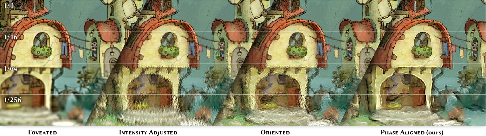
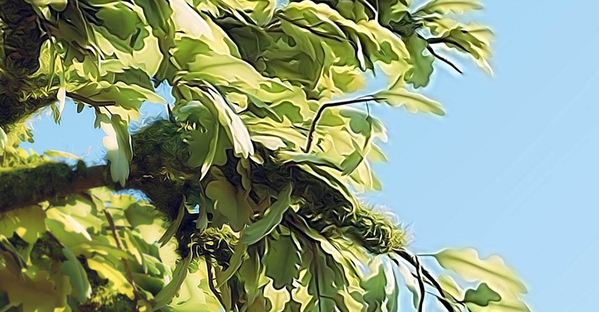

We present a method for enhancing the perceived quality of foveated images by extrapolating local image statistics, such as intensity, orientation and especially phase, from coarse to fine scales. In particular, we demonstrate that correct phase alignment across space and scales is crucial for achieving perceptually convincing image quality.

Novel display technologies can deliver high-quality images across a wide field of view, creating immersive experiences. While rendering for such devices is expensive, most of the content falls into peripheral vision, where human perception differs from that in the fovea. Consequently, it is critical to understand and leverage the limitations of visual perception to enable efficient rendering. A standard approach is to exploit the reduced sensitivity to spatial details in the periphery by reducing rendering resolution, so-called foveated rendering. While this strategy avoids rendering part of the content altogether, an alternative promising direction is to replace accurate and expensive rendering with inexpensive synthesis of content that is perceptually indistinguishable from the ground-truth image. In this paper, we propose such a method for the efficient generation of an image signal that substitutes the rendering of high-frequency details. The method is grounded in findings from image statistics, which show that preserving appropriate local statistics is critical for perceived image quality. Based on this insight, we extrapolate several local image statistics from foveated content into higher spatial frequency ranges that are attenuated or omitted in the rendering process. This rich set of statistics is later used to synthesize a signal that is added to the initial rendering, boosting its perceived quality. We focus on phase information, demonstrating the importance of its alignment across space and frequencies. We calibrate and compare our method with state-of-the-art strategies, showing a significant reduction in the content that must be accurately rendered at a relatively small extra cost for synthesizing the additional signal.
The image below shows a foveated image with an enhanced luminance channel. In this particular example, the enhancement is synthesized based on image parameters that were extracted from the groundtruth image, so the enhancement is as close as possible to the real difference between the foveated image and the original image. Adjust the sliders to influence how accurately the three parameters are resembled in the synthesized noise. The orange dot marks the gaze point.
